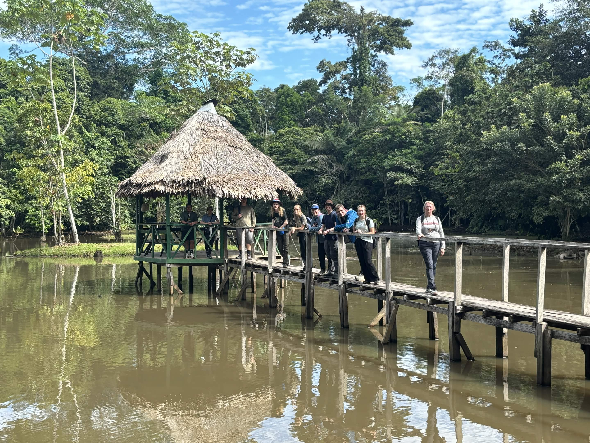
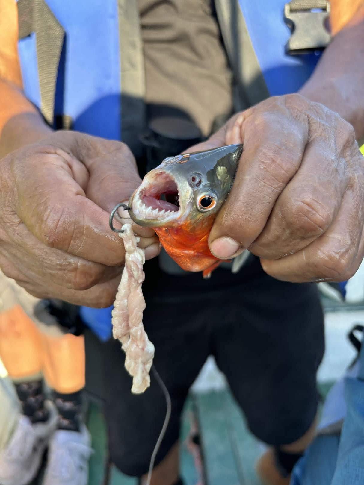
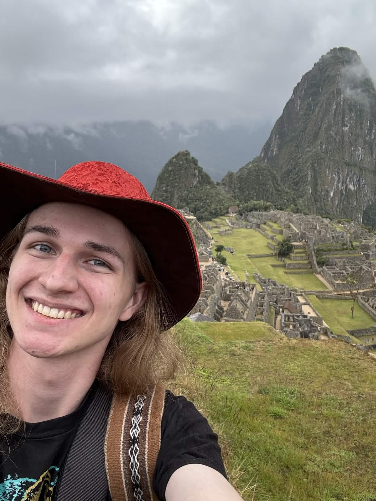
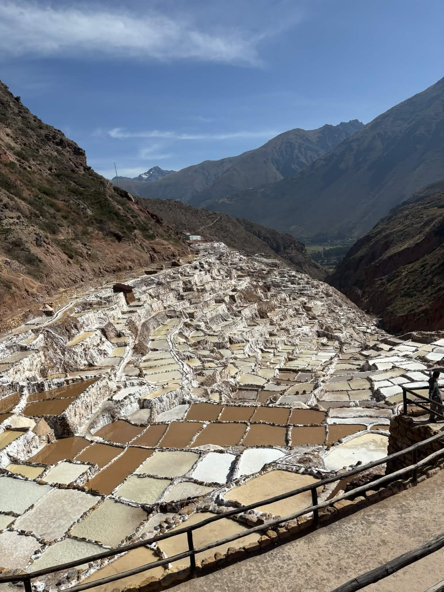

This is a story about my trip to Peru and Machu Pichu during the summer of 2024. This tour was really eye opening for me and it was a very important experience to me.
The trip started with 3 flights from Missoula to Las Angles airport, Los Angles airport to the Miami airport, and then from Miami to Lima, Peru. The travel time was long and exhausting but we finally made it. Our tour started with walking around Lima where we got to see what life was like there. I got to see some cool muriels and we also visited a part of the city where a bunch of cats get to live and be taken care of.
We then took a flight to Cusco. It's located really high up in the mountains, and only very talented pilots are able to take people up there. In Cusco it is very pretty. We stayed there for about a day before we then went to some archaelogical sites and then to a town in the Sacred Valley. It was after that when we went from there to Ollantaytambo to catch the train to Machu Pichu.
The train took us to a small town just outside of Machu Pichu. It had a lot of cool restaurants and even a hot springs. We waited there for a bit before we finally got on our bus going up to Machu Pichu. The ruins were beautiful. It was a cloudy day with a bit of rain was perfect for that particular setting. We toured the ruins and went back to the town where I got to visit the hot springs and then rest.
The next day we left the town. We had visited the key site of the tour, but the trip wasn't over yet. We came back to Cusco where we stayed for 2 days to actually get to enjoy it since we left it so quickly. We then went back to Lima so we could catch a flight to Iquitos. Iquitos is in the rainforest region of Peru and is VERY humid. We stepped out of the cool air conditioned plane and immediately I felt damp from the humidity alone. Thinking about it, it was definitely not comfortable, but I remember getting used to it. From there we immediately got on a boat to get to the cabin we were staying at. It was a common tourist location that was pretty deep in the rainforest by the river. That same day we went on a little nature walk and then got back on the boat to go fishing. I caught two pirhana which I thought was super cool. The following day we mostly stayed put and got to swim in the pool they had there, but we eventually went and visited a local tribe. They were definitely well conditioned to tourists because they had things to sell to us, but it was still cool getting to witness their culture and customs. That and my friend got to hold a sloth.
The next day was the last day of our trip. We went and briefly visited a school in a small town in the rainforest and talked about what we were looking at doing as students in America, and then we made the trio back home. I remember hearing a lot of people on the trip very ready to go back home pretty early on. Not that they didn't like it, but that they felt that they were ready to go back and rest. I found that funny though because for me that trip was the perfect duration. I was engaged every step of the way and by the end, I was perfectly satisfied and ready to get back home with my experiences. This trip was so amazing for me because it was my first time out of the country and it was such a cool place. I loved seeing the different wildlife. There is something about hearing different bird calls based on where you are in the world that is so cool to me. And the moment I got back and heard that same morning bird call I always knew was so satisfying to me.
Anyway, here are some pictures of my trip:




Things I Like Communications